Como ler cada parte do painel 📖
Um guia por página, com o que cada gráfico responde, como interpretá-lo e onde ele engana se lido rápido. No fim, as perguntas que mais apareceram até agora. ENEM 2025 · rede pública · 32 NREs · 1.639 escolas.
Como está organizado
Cinco páginas, uma pergunta cada
| Página | Responde |
|---|---|
| Painel | Como está o desempenho geral e como evoluiu de 2021 a 2025 |
| Mapa | Onde estão as diferenças no território — por NRE e por município |
| Sua Escola | Como uma escola se compara ao município, ao NRE e ao estado |
| Análise | Quais habilidades da Matriz vão bem ou mal, ano a ano |
| Redação | Redação em detalhe, com as cinco competências |
O painel mostra apenas a rede pública. Escolas particulares foram retiradas em agosto de 2025, a pedido — e retiradas do dado, não apenas escondidas na tela.
O filtro
Vale para todas as páginas, e ele se lembra da sua escolha
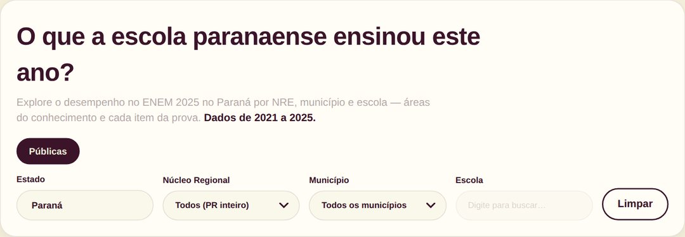
É uma cascata de três níveis: Núcleo Regional → Município → Escola. Escolher um NRE reduz a lista de municípios; escolher um município libera a busca de escolas. Deixar tudo em branco mostra o Paraná inteiro.
O campo Escola é uma busca por digitação, não uma lista — comece a escrever o nome e ele filtra. Aceita também o código INEP.
O filtro viaja com você entre as páginas. Se escolheu uma escola no Painel e depois abre a Análise, ela continua selecionada. É proposital — evita refazer a seleção — mas explica por que um número às vezes parece diferente do esperado: confira o cabeçalho, que sempre diz qual recorte está ativo. O botão Limpar volta ao Paraná inteiro.
Painel
A visão geral e a série histórica
Os cartões do topo
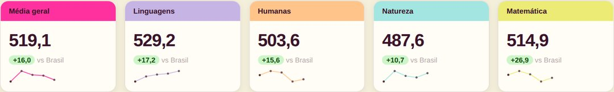
Cada cartão traz a média do recorte selecionado na escala ENEM de 0 a 1000, e abaixo a diferença contra a referência nacional. A minicurva à direita é a evolução de 2021 a 2025 — serve para ver tendência, não para ler valores exatos.
A Média geral não é a média das outras colunas. Ela é calculada por aluno, somando as cinco notas (Linguagens, Humanas, Natureza, Matemática e Redação) e dividindo por cinco — e só entra na conta quem tem nota nas cinco, isto é, quem fez os dois dias de prova. As médias por área contam todos os presentes naquela área. São populações diferentes, e por isso os números não fecham por soma.
Evolução
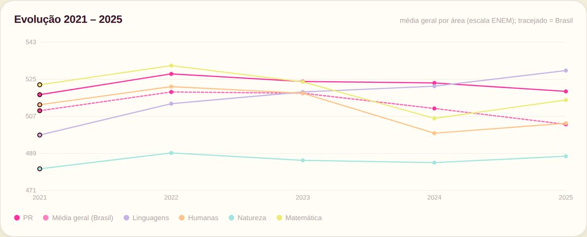
Cada linha é uma área; a tracejada é o Brasil. O que importa aqui é a distância até a referência e se ela abre ou fecha ao longo dos anos — mais do que a subida ou descida em si, que também depende da prova de cada ano.
Competências e habilidades
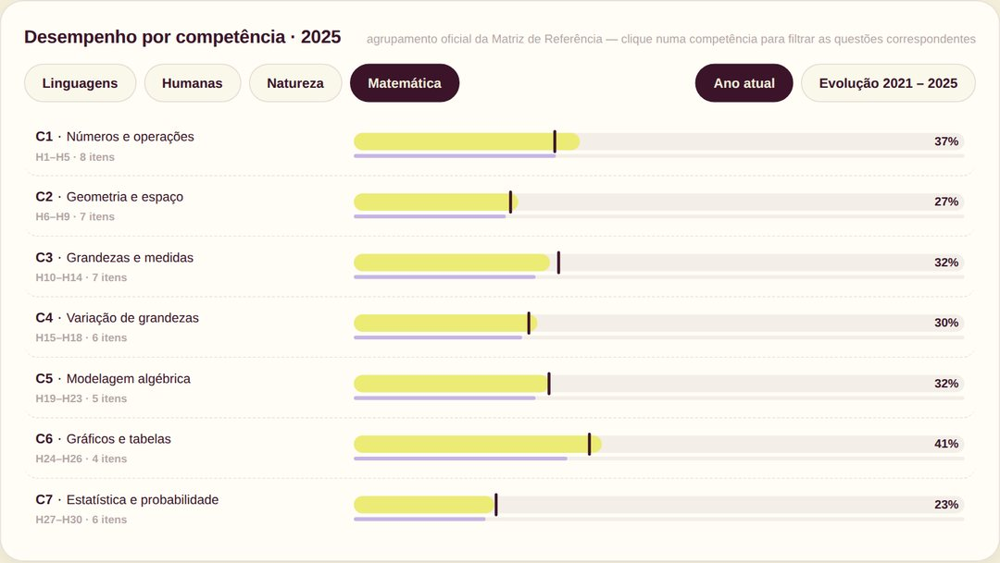
As barras mostram o percentual de acerto agrupado pelas competências da Matriz de Referência do INEP. Abaixo, a tabela de itens traz questão por questão do ano selecionado. Cores das áreas, aqui e no resto do painel: Linguagens Humanas Natureza Matemática Redação.
Mapa
Onde as diferenças estão no território
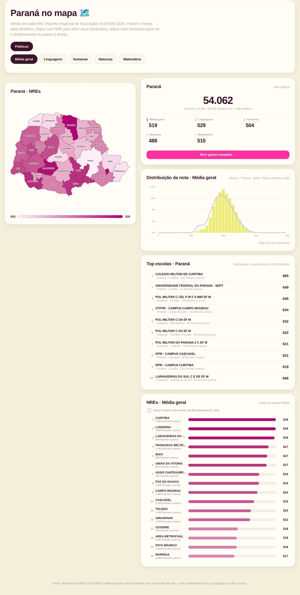
Dois níveis: primeiro os 32 Núcleos Regionais, depois os municípios do NRE que você clicar. A intensidade da cor acompanha a média. Ao lado, o painel lateral mostra as dez melhores escolas do recorte aberto.
Município pequeno tem poucos alunos, e com poucos alunos a média oscila muito. Um município que aparece muito escuro ou muito claro pode estar refletindo o tamanho da amostra, não o ensino. Confira sempre o número de alunos antes de concluir.
Sua Escola
Uma escola contra município, NRE e estado
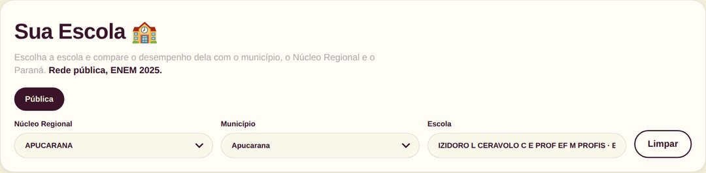
Os dois radares
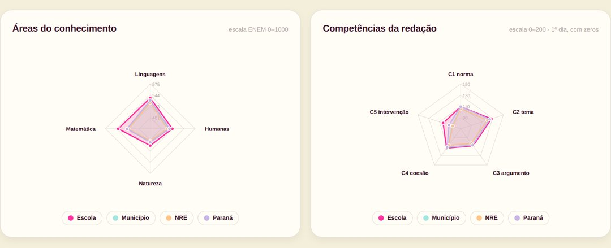
Quatro séries sobrepostas: escola, município, NRE e Paraná. Quanto mais para fora o vértice, maior a nota. O formato importa mais que o tamanho — um polígono "amassado" num eixo mostra a área em que a escola fica atrás dela mesma.
A legenda é clicável. Clique em "Paraná" para tirá-lo do gráfico e comparar só a escola com o município, por exemplo. Clique de novo para trazer de volta.
A escala não começa em zero. Numa régua de 0 a 1000, diferenças de 30 ou 50 pontos ficariam invisíveis, então o gráfico se ajusta aos dados. Por isso os anéis vêm com o valor escrito: leia esses números antes de julgar a distância entre as linhas, porque a base deslocada faz as diferenças parecerem maiores do que são.
Alunos que fizeram a prova
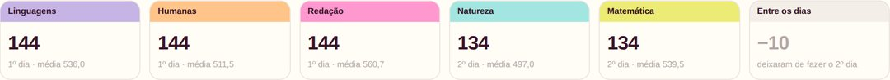
O ENEM tem dois dias: 1º dia traz Linguagens, Humanas e Redação; 2º dia, Natureza e Matemática. Cada área tem seu próprio total porque parte dos alunos vai só no primeiro dia. O último cartão mostra exatamente essa perda — é um número de gestão, não de desempenho, e costuma render mais ação do que a média.
Distribuição por faixa de nota
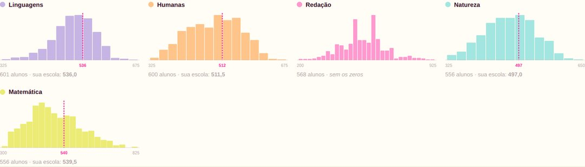
As barras mostram como os alunos se espalham pelas faixas de nota, e a linha rosa marca onde a média da sua escola cai dentro dessa distribuição. Responde algo que a média sozinha não diz: se a escola tem muitos alunos no meio, ou se tem dois grupos distantes puxando para lados opostos.
A distribuição é a do município (ou do NRE, ou do estado), não a da escola. O INEP publica a média por escola, mas não a distribuição — por isso o pano de fundo é o nível mais fino disponível, e a escola entra como marca.
O histograma conta apenas notas acima de zero. Nas quatro áreas isso deixa de fora menos de 0,3% dos alunos. Na redação são cerca de 5%, que são justamente os zeros — e como a média de redação da escola inclui os zeros, ela não seria comparável a essa distribuição. Por isso a redação aparece sem a marca.
Análise
As 120 habilidades da Matriz, ano a ano
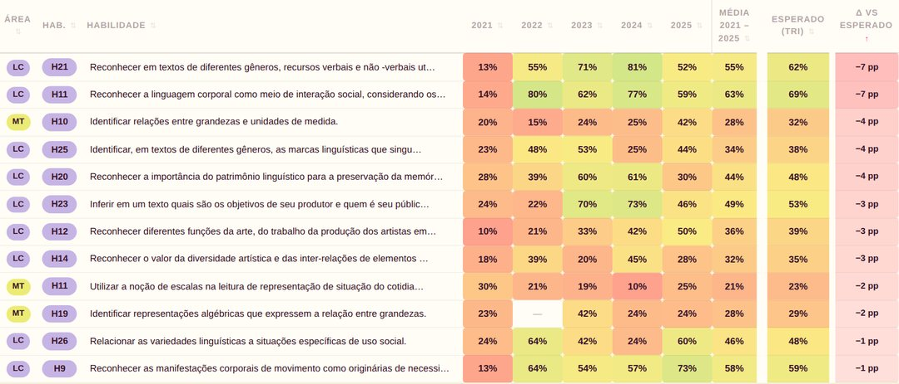
Cada linha é uma habilidade da Matriz de Referência; cada coluna de ano traz o percentual de acerto. A cor vai do vermelho (acerto baixo) ao verde (alto), para você varrer a tabela com o olho antes de ler número.
Esperado (TRI) é quanto os alunos deste grupo deveriam acertar naquela habilidade, dada a dificuldade dos itens e o nível de proficiência do grupo. Δ vs esperado é a diferença entre o observado e esse esperado.
É a coluna mais útil da página: um acerto de 40% pode ser bom ou ruim dependendo de quem fez a prova e de quão difícil era o item. O Δ tira o efeito do nível do grupo e mostra onde há lacuna de fato — negativo grande é onde vale intervir.
Com uma escola selecionada, as colunas de 2021, 2022 e 2023 aparecem com "—". Não é falha: o INEP só passou a publicar o código da escola nos microdados a partir de 2024. Antes disso não há como saber de que escola era cada aluno. Para município, NRE e estado, a série completa está lá.
Um "—" também aparece quando a habilidade não foi cobrada naquele ano.
Redação
Por que há dois números, e quando usar cada um
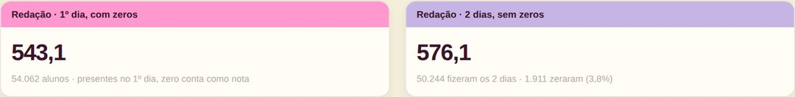
1º dia, com zeros é a média sobre todos os presentes no primeiro dia, com quem zerou entrando na conta como 0. É a leitura mais comum, e a que serve para comparar com números de fora.
2 dias, sem zeros considera só quem fez as duas provas e não zerou. Isola a qualidade da escrita da taxa de anulação e de abandono — dois problemas com soluções diferentes.
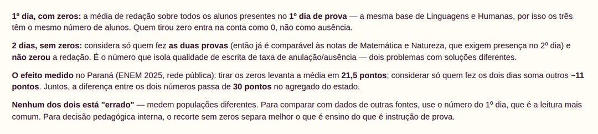
No Paraná, rede pública, em 2025: tirar os zeros levanta a média em 21,5 pontos; considerar só quem fez os dois dias soma outros ~11 pontos. Juntos, mais de 30 pontos entre um número e o outro. Nenhum dos dois está errado — medem populações diferentes.
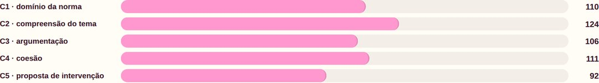
Cada competência vale de 0 a 200. A C5 — proposta de intervenção é historicamente a mais baixa, e a que mais responde a treino explícito de estrutura.
O recorte sem zeros só existe no nível do estado. Ao filtrar por NRE, município ou escola, o segundo cartão avisa que está indisponível em vez de mostrar número errado. O primeiro cartão funciona em todos os níveis.
Baixar os dados
Na página Análise
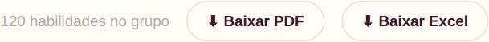
- Baixar PDF gera um relatório com o filtro exato que está na tela, agrupado por área do conhecimento e por competência. Abre o diálogo de impressão do navegador — escolha "Salvar como PDF" no destino.
- Baixar Excel gera um arquivo
.xlsxcom a mesma tabela, na mesma ordenação. Os percentuais saem como número, para continuarem somáveis e filtráveis na planilha.
Os dois respeitam tudo o que estiver filtrado: recorte, área e anos ativos.
Perguntas frequentes
As que mais apareceram desde o lançamento
Escolas que não aparecem
Procurei minha escola e ela não aparece na busca. É erro do painel?
Na maioria dos casos, não. O motivo mais comum é o próprio INEP: quando poucos alunos de uma escola fizeram a prova, ele troca o código real por um código genérico, sem nome, justamente para não permitir identificar a escola. O limite é rígido — nenhum desses registros passa de 9 alunos.
Os alunos continuam contando nos números do município, do NRE e do estado. O que não é possível é dizer de qual escola eles são. São 318 registros assim no Paraná, somando 1.115 alunos — cerca de 2,1% da rede pública. Ou seja: os agregados estão praticamente completos; a lacuna é só na atribuição por escola.
Por que nem toda escola do Paraná está no painel?
São quatro filtros, e só um é nosso:
1. A escola precisa ter tido candidato. Se nenhum aluno se inscreveu informando aquela escola, ela não existe no microdado — não há o que mostrar.
2. Código mascarado pelo INEP quando a turma é pequena: 318 registros, conforme a pergunta acima.
3. Escolas particulares: 413 removidas. Essa foi decisão do cliente, em agosto de 2025, e é a única remoção nossa.
4. Inscritos, mas nenhum presente. Dois casos no estado inteiro — escolas com candidatos inscritos e comparecimento zero. Sem presença não há nota, e sem nota não há média a exibir.
Minha escola aparece na busca mas a página vem vazia. Por quê?
É o caso 4 acima: há inscritos vinculados à escola, mas ninguém compareceu. A escola entra na listagem porque existe no cadastro de inscrição, e não tem página de detalhe porque não há nenhuma prova para agregar.
Por que não consigo ver escolas particulares?
Foi uma decisão de escopo do cliente. A remoção foi feita na origem do dado, e não só escondendo botões — as escolas privadas não estão nos arquivos que o painel carrega, e nenhum link ou endereço direto as traz de volta.
Números e médias
A Média geral não é a média das quatro áreas. Está errado?
Não. A Média geral é calculada por aluno: soma as cinco notas (as quatro áreas mais a redação), divide por cinco, e depois tira a média disso entre os alunos. Só entra quem tem nota nas cinco — quem fez os dois dias.
As médias por área contam todos os presentes naquela área, que é um grupo maior e diferente. Populações diferentes não fecham por soma. É a mesma definição de "nota geral" que o candidato vê, e por isso foi mantida.
Por que o número de alunos muda de uma área para outra?
Porque o ENEM tem dois dias. Linguagens, Humanas e Redação são do primeiro dia; Natureza e Matemática, do segundo. Parte dos alunos vai só no primeiro. No Paraná, em 2025, foram 54.062 presentes no primeiro dia contra 50.341 no segundo.
Essa diferença é abandono entre as provas — vale acompanhar como indicador próprio, separado do desempenho.
Por que a redação tem dois números?
Porque respondem perguntas diferentes. O de 1º dia, com zeros é a leitura comparável com o mundo externo. O de 2 dias, sem zeros mede qualidade de escrita sem a interferência de anulação e abandono.
A distância entre eles é grande — mais de 30 pontos no estado — e é informação, não ruído: mostra quanto do resultado da redação é taxa de zero e não escrita. No Paraná, 3,13% dos alunos zeraram a redação.
O que é a coluna "Esperado (TRI)"?
É quanto os alunos daquele grupo deveriam acertar em cada habilidade, considerando a dificuldade dos itens e o nível de proficiência que eles demonstraram na prova. Serve para tornar o acerto comparável: 40% de acerto num item difícil, com alunos de proficiência mediana, pode ser um bom resultado.
O cálculo usa os parâmetros dos itens publicados pelo próprio INEP, aplicados aluno a aluno e depois agregados.
Esses números são publicados pelo INEP?
Não. O que o INEP publica é o microdado — a linha de cada aluno, com suas notas e respostas. Todas as médias, percentuais e agregações do painel são calculadas por nós a partir desse microdado.
Isso importa na hora de comparar com números de outras fontes: além do cálculo ser nosso, o painel usa um recorte específico — concluintes com escola identificada, rede pública — que é mais estreito que a base de divulgação geral do INEP. Divergências pequenas contra outros relatórios costumam vir daí.
Por que a escala do radar não começa em zero?
Porque na escala real de 0 a 1000 as diferenças entre uma escola e o estado — que normalmente ficam entre 30 e 80 pontos — seriam invisíveis: os quatro polígonos virariam quase o mesmo desenho.
O preço disso é que a base deslocada exagera as diferenças. Por isso os anéis do gráfico vêm com o valor escrito: leia esses números antes de concluir que a distância entre duas linhas é grande.
Uso e origem
Como sei a qual questão da prova uma habilidade corresponde?
Clicando no código da habilidade (H1, H2…) na página Análise — abre o detalhe do item, com as questões daquela habilidade reproduzidas das provas oficiais.
Nos microdados, a ligação é feita pela posição da questão no caderno. O arquivo de itens traz, para cada questão, a área, a habilidade, a posição e o código do caderno; o arquivo de resultados traz a sequência de respostas de cada aluno na mesma ordem. É o cruzamento dos dois que diz qual questão é qual — e é por isso que a cor do caderno importa: a mesma questão ocupa posições diferentes em cadernos diferentes.
Consigo exportar o que estou vendo?
Na página Análise, sim: os botões Baixar PDF e
Baixar Excel geram o relatório com o filtro exato da tela — recorte,
área e anos ativos. O PDF sai agrupado por área e competência; o Excel sai como
.xlsx, com os percentuais em formato numérico.
Para outros recortes — por exemplo, todas as escolas de um NRE numa planilha — é possível gerar sob demanda.
Por que 2021, 2022 e 2023 ficam vazios quando escolho uma escola?
Porque o INEP só começou a publicar o código da escola nos microdados em 2024. Antes disso é impossível saber de que escola era cada aluno, então não existe histórico por escola anterior a 2024.
Nos níveis de município, NRE e estado a série de 2021 a 2025 está completa.
De quando são os dados?
O painel mostra o ENEM 2025 nas páginas de desempenho, e a série 2021–2025 na Evolução e na Análise. A fonte são os microdados do INEP, recortados em concluintes com escola identificada, rede pública do Paraná.
Referências e uso dos dados
Procedência e como citar
Este painel é uma análise independente feita a partir dos microdados públicos do ENEM. O Inep não é responsável pelas análises, recortes e conclusões apresentados aqui — a responsabilidade é inteiramente de quem publica esta página.
Como citar as fontes:
- BRASIL. Instituto Nacional de Estudos e Pesquisas Educacionais Anísio Teixeira (Inep). Microdados do Enem 2021. Brasília: Inep, 2022.
- BRASIL. Instituto Nacional de Estudos e Pesquisas Educacionais Anísio Teixeira (Inep). Microdados do Enem 2022. Brasília: Inep, 2023.
- BRASIL. Instituto Nacional de Estudos e Pesquisas Educacionais Anísio Teixeira (Inep). Microdados do Enem 2023. Brasília: Inep, 2024.
- BRASIL. Instituto Nacional de Estudos e Pesquisas Educacionais Anísio Teixeira (Inep). Microdados do Enem 2024. Brasília: Inep, 2025.
- BRASIL. Instituto Nacional de Estudos e Pesquisas Educacionais Anísio Teixeira (Inep). Microdados do Enem 2025. Brasília: Inep, 2026.
- BRASIL. Instituto Nacional de Estudos e Pesquisas Educacionais Anísio Teixeira (Inep). Matriz de Referência do Enem. Brasília: Inep, 2009.
Todos disponíveis em: gov.br/inep — Dados Abertos · Microdados do Enem. Acesso em: 31 jul. 2026.